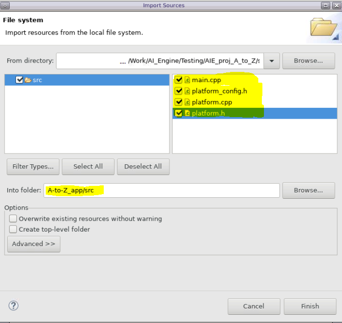
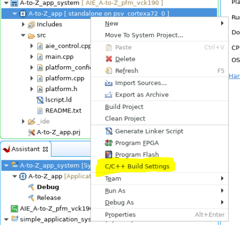
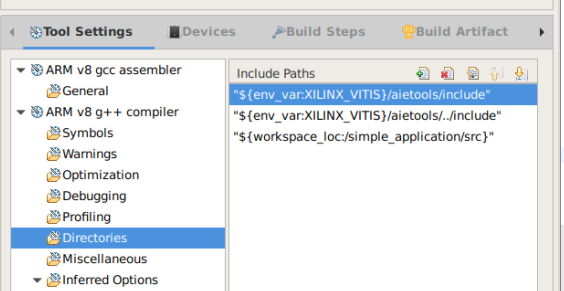
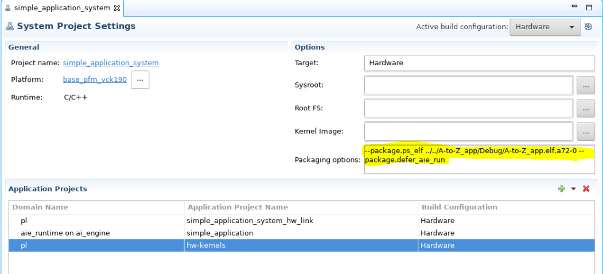
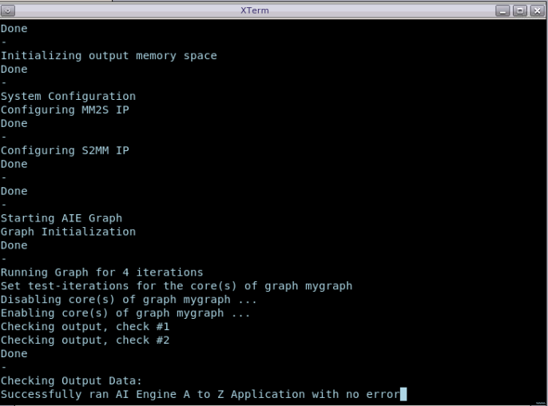

In this section of the tutorial, you will learn how to build a PS bare-metal application using the XSA created in the previous step and then build, as well as run the complete system.
Open the Vitis software platform 2021.1 in the same workspace directory as the previous step. Click File → New → Platform Project.
Set the Platform Project Name to AIE_A-to-Z_pfm_vck190 and click Next.
Use the XSA generated in the previous step that you can find in workspace/simple_application_system_hw_link/Hardware/binary_container_1.xsa, set standalone as Operating system and CIPS_0_pspmc_0_psv_cortexa72_0 as Processor, and click Finish.
Build the platform.
Create a new application by clicking on New → Application Project.
Select AIE_A-to-Z_pfm_vck190 as the platform.
Set the name for the application (example A-to-Z_app), select the A72_0 processor domain (CIPS_0_pspmc_0_psv_cortexa72_0), and click Next.
On the next page, select standalone for the domain.
Finally, select the Empty Application (C++) template and click Finish.
Right-click on the src folder under the A-to-Z_app project and click Import Sources.
Import the aie_control.cpp file from the AI Engine application project (simple_application/Hardware/Work/ps/c_rts/aie_control.cpp).
Import the following source files from the src folder
main.cpp
platform.cpp
platform.h
platform_config.h

Go through the main.cpp file. You can see that the code is initializing the input data and the memory space for the output data. One thing to note is the use of the .init() and .run() APIs to control the AI Engine.
printf("Starting AIE Graph\n");
printf("Graph Initialization\n");
mygraph.init();
printf("Done \n");
printf("- \n");
printf("Running Graph for 4 iterations\n");
mygraph.run(4);
There are two options to enable an AI Engine graph from a system:
Enable the graph in the PDI. This means that the graph will be started during BOOT and will run forever.
Enable the AI Engine graph from the PS program using <graph>.init() and <graph>.run() APIs. This is what we are using in this case.
Right-click on A72 PS application (A-to-Z_app) and select C/C++ Build Settings.

In the directories section under ARM v8 g++ compiler, add the directory for the AI Engine application:
a. ${env_var:XILINX_VITIS}/aietools/include
b. The sources folder for the AI Engine application (${workspace_loc:/simple_application/src})

Build the A72 PS application (A-to-Z_app) .
Click simple_application_system.sprj. Add the following options in the Packaging options box:
--package.ps_elf ../../A-to-Z_app/Debug/A-to-Z_app.elf,a72-0 --package.defer_aie_run

Note: The option
--package.defer_aie_runis required when running the AI Engine graph from the PS (see the Versal ACAP AI Engine Programming Environment User Guide (UG1076)).
Build the simple_application_system project.
Make sure your VCK190 board is connected to your PC.
Right-click on the simple_application_system and click Run As → Launch Hardware.

You should see the application running successfully with no error.

In this tutorial, you have performed an end-to-end flow to create a platform based on the VCK190 board, added an AI Engine kernel and PL kernels into the system, and built a PS bare-metal application to run on it.
Return to Step 3 — Go back to main page — Check out the RPU version design (optional)
Licensed under the Apache License, Version 2.0 (the “License”); you may not use this file except in compliance with the License. You may obtain a copy of the License at
http://www.apache.org/licenses/LICENSE-2.0
Unless required by applicable law or agreed to in writing, software distributed under the License is distributed on an “AS IS” BASIS, WITHOUT WARRANTIES OR CONDITIONS OF ANY KIND, either express or implied. See the License for the specific language governing permissions and limitations under the License.
Copyright© 2020–2021 Xilinx
XD018